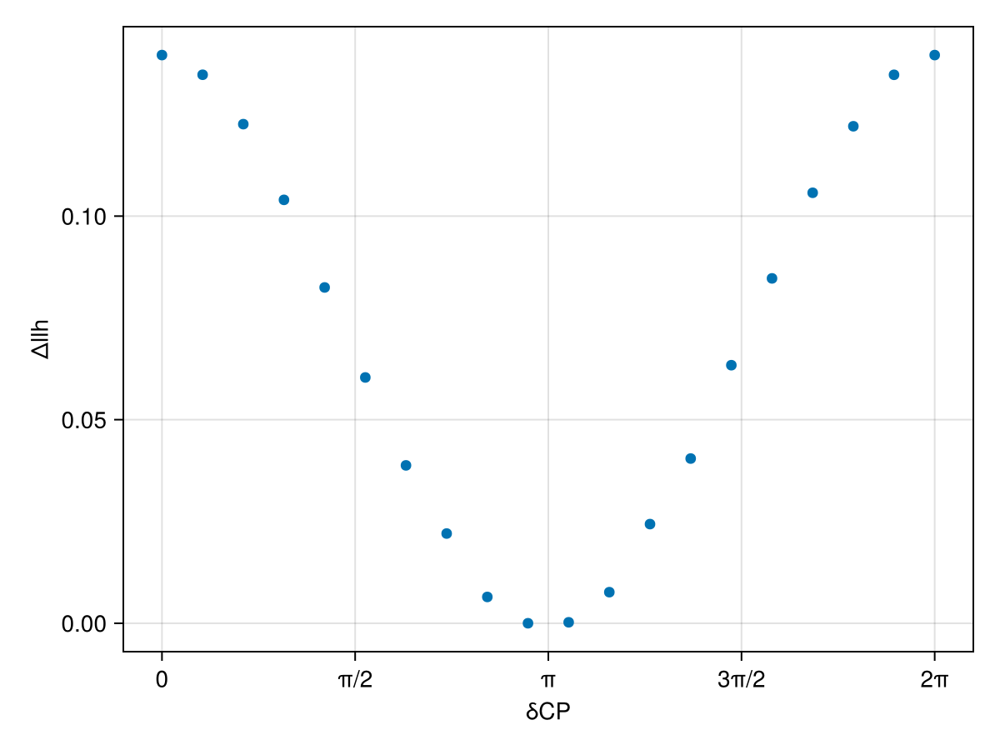

Custom physics model
By default, each experiment configures its own physics modules. You can override this to use custom oscillation models, inverted ordering, or BSM physics.
Modifying the neutrino physics model
For this example, we want to configure a model that uses the inverted neutrino mass ordering and the standard matter interactions:
using Newtrinos
#modify the neutrino oscillation model
osc_cfg = Newtrinos.osc.OscillationConfig(
flavour = Newtrinos.osc.ThreeFlavour(ordering=:IO), #Inverted ordering
propagation = Newtrinos.osc.Basic(),
states = Newtrinos.osc.All(),
interaction = Newtrinos.osc.SI(), #Standard matter interactions
)
osc = Newtrinos.osc.configure(osc_cfg) #oscillation configuration
#Atmospheric experiments need oscillations, fluxes, Earth density, and cross-sections:
atm_flux = Newtrinos.atm_flux.configure()
earth_layers = Newtrinos.earth_layers.configure()
xsec = Newtrinos.xsec.configure()
physics = (; osc, atm_flux, earth_layers, xsec) #full modified physics modelEach experiment extracts whatever physics modules it needs. Reactor experiments (Daya Bay, KamLAND) only use osc; atmospheric experiments use all four.
The physics model modified above can now be easily passed to an experiment of our choice to do e.g. a likelihood profile scan.
Passing physics to experiments
Since we are looking at standard matter effects, we need a long baseline to see effects so we could pass the model to the IceCube deepcore experiment:
experiments = (
deepcore = Newtrinos.deepcore.configure(physics),
)
params = Newtrinos.get_params(experiments)
priors = Newtrinos.get_priors(experiments)
likelihood = Newtrinos.generate_likelihood(experiments)Likelihood profile scan
We now want to do a profile likelihood scan for e.g. different values of $\delta_{CP}$. To keep it simple and make it not too time consuming, we evaluate (only) 20 scan grid points with different $\delta_{CP}$-values. We furthermore fix $\theta_{12}$, $\theta_{13}$, $\theta_{23}$, and $\Delta m_{12}^2$ to their default values.
This takes a few minutes since we are optimizing over $\sim 20$ parameters to maximise the likelihood at each grid point. It may be useful to use julias multithreading for profile scans in order to accelerate the execution.
using BAT #for combining the priors into a product of prior distributions with distprod
#combine the priors into a product of prior distributions
priors_d = distprod(;priors...)
#find MLE to use it as starting point for the optimization
llh, log_posterior, mle_result = Newtrinos.find_mle(likelihood, priors_d, params)using DataStructures #for assigning the dictionaries for conditional_vars and vars_to_scan
# Fix some parameters
conditional_vars = Dict(
:θ₁₂ => params.θ₁₂,
:θ₁₃ => params.θ₁₃,
:Δm²₂₁ => params.Δm²₂₁,
:θ₂₃ => params.θ₂₃,
)
priors = Newtrinos.condition(priors, conditional_vars, params)
vars_to_scan = OrderedDict(:δCP => 20) # 20 scanpoints
result = Newtrinos.profile(likelihood, priors, vars_to_scan, mle_result)NewtrinosResult((δCP = [0.0, 0.3306939635357677, 0.6613879270715354, 0.992081890607303, 1.3227758541430708, 1.6534698176788385, 1.984163781214606, 2.3148577447503738, 2.6455517082861415, 2.9762456718219092, 3.306939635357677, 3.6376335988934447, 3.968327562429212, 4.29902152596498, 4.6297154895007475, 4.960409453036515, 5.291103416572283, 5.621797380108051, 5.9524913436438185, 6.283185307179586],), (atm_flux_delta_spectral_index = [-0.022069879743819066, -0.021919003942445295, -0.021739848199053773, -0.021562969629360502, -0.02147720344401615, -0.02137463799864237, -0.021292053771112828, -0.021252821647568833, -0.021342016443182964, -0.02142710628970914, -0.021569357897364735, -0.02177251473439103, -0.021869552523384413, -0.022091424481426904, -0.022216013291022466, -0.022295298838390806, -0.022318313152175338, -0.022288308095276356, -0.02221599950768452, -0.022069879150731636], atm_flux_nuenuebar_sigma = [0.4496455684191955, 0.4496617812513653, 0.44999368703186327, 0.44839039698633903, 0.4493589019670893, 0.4493133022549277, 0.4480822800189341, 0.44688836540991006, 0.4471564606492144, 0.4460461996602971, 0.4470659320445142, 0.44830768210893285, 0.4459610386740747, 0.44833551099208113, 0.4487952070058562, 0.4474360707748545, 0.4490651167617858, 0.450726281661572, 0.4506476304872102, 0.4496455901345404], atm_flux_nuenumu_sigma = [-0.27273340081067654, -0.27268396849653465, -0.27263009150970385, -0.2731246936192843, -0.27256943077891727, -0.2721314296157297, -0.2723032803707175, -0.2726195572649746, -0.2721016448797038, -0.27199388075896647, -0.27232627818329713, -0.27160309049375875, -0.2724392709747205, -0.2722194035441793, -0.27213222453250546, -0.2726553773086126, -0.27271591792331895, -0.27263163964042325, -0.27250119624462327, -0.27273339848311556], atm_flux_numunumubar_sigma = [-0.01971702671063676, -0.019734833446791455, -0.019586856528686494, -0.021492867344311824, -0.020341016485095082, -0.020175992093359144, -0.021450000754803595, -0.02264797694667373, -0.02199989386370046, -0.022731957729078003, -0.02233919854590171, -0.020932748712377797, -0.022899389569190604, -0.020905889698228985, -0.02031771438398833, -0.02142744388603834, -0.020113677644654538, -0.019144989911658517, -0.018940368243086078, -0.019717007455797273], atm_flux_updown_sigma = [-0.01268017857046936, -0.012629347333518759, -0.012598598489804038, -0.012465997140950778, -0.012510411575507748, -0.012526167761881627, -0.012458210936280965, -0.012402125703025148, -0.012481919172804718, -0.012483840848760653, -0.012550120182023899, -0.012728171338490545, -0.012605088504489667, -0.012778800768884968, -0.012830697368100838, -0.0127339427899523, -0.01278536123974674, -0.012845258556185084, -0.0128038010347263, -0.012680179443068967], atm_flux_uphorizonzal_sigma = [1.5247845927085741, 1.5236681594651738, 1.5217689818794018, 1.5175802200317112, 1.5153447543213372, 1.5127844845036453, 1.509090484554458, 1.5048757514612692, 1.5056180450669552, 1.505560132153396, 1.5057099857821274, 1.5099950915403728, 1.5087115044431905, 1.5144163205954022, 1.5179576861790451, 1.5203222398874856, 1.5234192445611503, 1.5266683902234728, 1.5267583378997274, 1.5247845921933614], deepcore_atm_muon_scale = [0.969110134911682, 0.9690395457696522, 0.9687822993521635, 0.9685126791534924, 0.9684090478922529, 0.9682119131950839, 0.968087357581994, 0.9678237158438189, 0.9679586759983068, 0.9680081407585024, 0.9679697470916692, 0.9683242934241925, 0.9682586875234405, 0.9687715038577334, 0.9689554766269853, 0.9691948631706622, 0.9692518613937626, 0.9692292860409122, 0.9692344263171035, 0.9691101313892292], deepcore_ice_absorption = [1.0190712818159853, 1.019005901673006, 1.0189574191478186, 1.018980367901379, 1.0188926744398428, 1.0188309343297326, 1.0187506989229607, 1.0188091078944312, 1.0187508154508826, 1.0187704628739185, 1.018761789938926, 1.0188017559536084, 1.018893190925992, 1.0189166873176456, 1.0190197627158264, 1.0190274105780663, 1.0190999596585462, 1.0191202957957397, 1.0191197718964693, 1.0190712816995584], deepcore_ice_scattering = [0.9754104747944384, 0.9754216235475971, 0.9754347982538184, 0.9754776186071479, 0.975551398144093, 0.9756011969665583, 0.9756301235131781, 0.9756883562393427, 0.9756945684617289, 0.9756990709641301, 0.9756990824082713, 0.9756837116968293, 0.9756697893250168, 0.9756265704177093, 0.9755775313346681, 0.9755421038243738, 0.9754866025726006, 0.9754473129497367, 0.9754314440406672, 0.9754104747039234], deepcore_lifetime = [2.2271320805738326, 2.227602785056847, 2.2282772294529662, 2.2290056753971337, 2.2293969484448755, 2.230049307641871, 2.230749521409974, 2.231186233431553, 2.231041858065328, 2.2311233506656194, 2.230820947000916, 2.2300649419065217, 2.2297856361940926, 2.228799549656793, 2.2281211946256687, 2.2275084984355296, 2.227101818014137, 2.2269098216965615, 2.2268068858587236, 2.227132081134639], deepcore_opt_eff_headon = [-1.656068319020143, -1.6577692127009813, -1.6585524146819672, -1.6579583403123013, -1.657182983617881, -1.656095209817011, -1.6550047987148497, -1.650865873267378, -1.6516458580268898, -1.6483073198378762, -1.6481091090124211, -1.6454770844640083, -1.6447494854032803, -1.6446166412173193, -1.6450574907480657, -1.6477306293517389, -1.6488087197167105, -1.650241758909079, -1.6529398333616672, -1.656068340709603], deepcore_opt_eff_lateral = [-0.18255133734450082, -0.18275345346872923, -0.1824396081004814, -0.18212257713197408, -0.18266453318566095, -0.18291014724836813, -0.18361298613611576, -0.1822646581695019, -0.18484141703598841, -0.18403778927769873, -0.18481542044829044, -0.184481216503053, -0.18424789061414104, -0.1844014394478896, -0.18398354901324987, -0.18467942897339576, -0.18322331700122804, -0.1822381278378831, -0.18230141141730952, -0.1825513381306385], deepcore_opt_eff_overall = [1.0531453115175575, 1.0529449390155863, 1.0527061608020585, 1.0524918051557663, 1.0524325596388606, 1.0523082968246391, 1.0521410338839927, 1.052087296197525, 1.0522319979386112, 1.0522758850267055, 1.0523679265171366, 1.052701759896116, 1.0527866614676231, 1.0530414962019863, 1.0532147248417563, 1.0533318295624274, 1.0533547650103061, 1.0533211177600157, 1.0533098485587447, 1.053145311270432], nc_norm = [1.2583270013073222, 1.2582386559736942, 1.2580416156102838, 1.2582187674457161, 1.2575659281498732, 1.256947002231531, 1.2568848588443993, 1.2569422270436283, 1.2564638974601026, 1.256375921514348, 1.256674822008299, 1.2560659318793286, 1.2570215722182312, 1.2570375229132473, 1.2571848618056973, 1.2579551535569404, 1.2581778150472585, 1.258115179269753, 1.258076570963393, 1.2583269997184265], nutau_cc_norm = [0.9196161000129413, 0.919845587387803, 0.9201951874327126, 0.9202592033041539, 0.9207859685231039, 0.9210657459259987, 0.9211644241266632, 0.921262898116575, 0.9212260070870915, 0.9209000591669252, 0.9210768009015137, 0.9207058308133966, 0.9202522585669171, 0.9201080511333066, 0.9197978709369172, 0.9192992910063388, 0.9193796814000663, 0.9194116913399875, 0.9194853259189986, 0.9196161062227461], Δm²₂₁ = [7.53e-5, 7.53e-5, 7.53e-5, 7.53e-5, 7.53e-5, 7.53e-5, 7.53e-5, 7.53e-5, 7.53e-5, 7.53e-5, 7.53e-5, 7.53e-5, 7.53e-5, 7.53e-5, 7.53e-5, 7.53e-5, 7.53e-5, 7.53e-5, 7.53e-5, 7.53e-5], Δm²₃₁ = [-0.00224828611827625, -0.002248869859093192, -0.0022495432230636636, -0.002250100568326749, -0.002250006860980358, -0.002250335134294289, -0.002250553050116638, -0.0022504332338005094, -0.0022499907389296227, -0.0022497870530769747, -0.002249524771852281, -0.0022485208356346153, -0.0022484053591070472, -0.0022475574376985665, -0.0022473479592003236, -0.002247414816182864, -0.002247364801260382, -0.0022475860506421005, -0.002247784245838337, -0.002248286121194701], δCP = [0.0, 0.3306939635357677, 0.6613879270715354, 0.992081890607303, 1.3227758541430708, 1.6534698176788385, 1.984163781214606, 2.3148577447503738, 2.6455517082861415, 2.9762456718219092, 3.306939635357677, 3.6376335988934447, 3.968327562429212, 4.29902152596498, 4.6297154895007475, 4.960409453036515, 5.291103416572283, 5.621797380108051, 5.9524913436438185, 6.283185307179586], θ₁₂ = [0.5872523687443223, 0.5872523687443223, 0.5872523687443223, 0.5872523687443223, 0.5872523687443223, 0.5872523687443223, 0.5872523687443223, 0.5872523687443223, 0.5872523687443223, 0.5872523687443223, 0.5872523687443223, 0.5872523687443223, 0.5872523687443223, 0.5872523687443223, 0.5872523687443223, 0.5872523687443223, 0.5872523687443223, 0.5872523687443223, 0.5872523687443223, 0.5872523687443223], θ₁₃ = [0.1454258194533693, 0.1454258194533693, 0.1454258194533693, 0.1454258194533693, 0.1454258194533693, 0.1454258194533693, 0.1454258194533693, 0.1454258194533693, 0.1454258194533693, 0.1454258194533693, 0.1454258194533693, 0.1454258194533693, 0.1454258194533693, 0.1454258194533693, 0.1454258194533693, 0.1454258194533693, 0.1454258194533693, 0.1454258194533693, 0.1454258194533693, 0.1454258194533693], θ₂₃ = [0.8556288707523761, 0.8556288707523761, 0.8556288707523761, 0.8556288707523761, 0.8556288707523761, 0.8556288707523761, 0.8556288707523761, 0.8556288707523761, 0.8556288707523761, 0.8556288707523761, 0.8556288707523761, 0.8556288707523761, 0.8556288707523761, 0.8556288707523761, 0.8556288707523761, 0.8556288707523761, 0.8556288707523761, 0.8556288707523761, 0.8556288707523761, 0.8556288707523761], llh = [-539.8049330827723, -539.8000995927374, -539.7879674610238, -539.7693727710589, -539.7478591513834, -539.7257541746723, -539.704159240741, -539.6874199146595, -539.6718475355148, -539.6653841469893, -539.6656193534601, -539.6730184408678, -539.6897364866329, -539.7058365790302, -539.7287652283887, -539.7500852351102, -539.7711101641992, -539.7874498959673, -539.8000873576898, -539.8049331000268], log_posterior = [-536.8724415703206, -536.8633592428273, -536.8446617355287, -536.8185394855576, -536.7878966091191, -536.7561749362466, -536.7267827380431, -536.7028017992154, -536.6866081025026, -536.679917005843, -536.6833979284575, -536.6966652820921, -536.7185192103873, -536.7466072525207, -536.7780786086615, -536.8095386882973, -536.8374514171492, -536.8586924671218, -536.870822946445, -536.8724415703315]), Dict{String, Any}("repo_clean" => false, "exec_time" => 830.813000202179, "username" => "David", "repo" => "c:\\Users\\David\\IceCube_project\\Newtrinos.jl", "cache_dir" => nothing, "hostname" => "DESKTOP-QSI7DD1", "params" => (atm_flux_delta_spectral_index = 0.0, atm_flux_nuenuebar_sigma = 0.0, atm_flux_nuenumu_sigma = 0.0, atm_flux_numunumubar_sigma = 0.0, atm_flux_updown_sigma = 0.0, atm_flux_uphorizonzal_sigma = 0.0, deepcore_atm_muon_scale = 1.0, deepcore_ice_absorption = 1.0, deepcore_ice_scattering = 1.0, deepcore_lifetime = 2.5, deepcore_opt_eff_headon = 0.0, deepcore_opt_eff_lateral = 0.0, deepcore_opt_eff_overall = 1.0, nc_norm = 1.0, nutau_cc_norm = 1.0, Δm²₂₁ = 7.53e-5, Δm²₃₁ = -0.0024, δCP = 1.0, θ₁₂ = 0.5872523687443223, θ₁₃ = 0.1454258194533693, θ₂₃ = 0.8556288707523761), "date" => "2026-06-22 21:54:52", "task" => "profile", "vars_to_scan" => OrderedDict(:δCP => 20)…))We can also briefly plot the Likelihood profile:
using CairoMakie
fig, ax, plt = scatter(result.axes.δCP, maximum(result.values.llh) .- result.values.llh)
ax.xlabel = "δCP"
ax.ylabel = "Δllh"
ax.xticks = ([0, π/2, π, 3π/2, 2π], ["0", "π/2", "π", "3π/2", "2π"])
fig